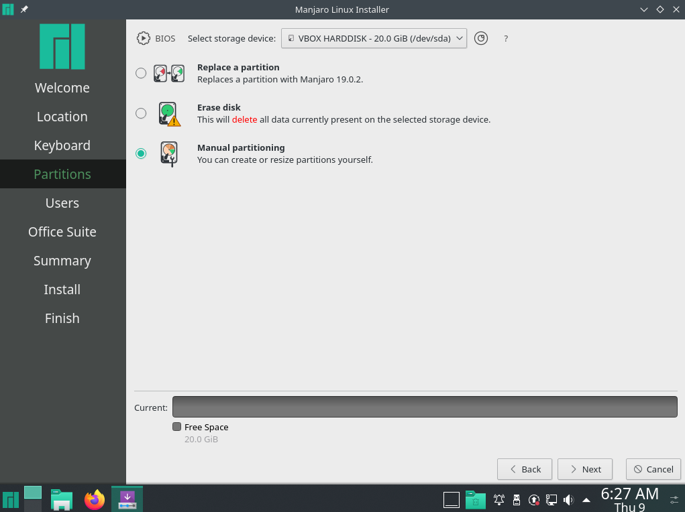
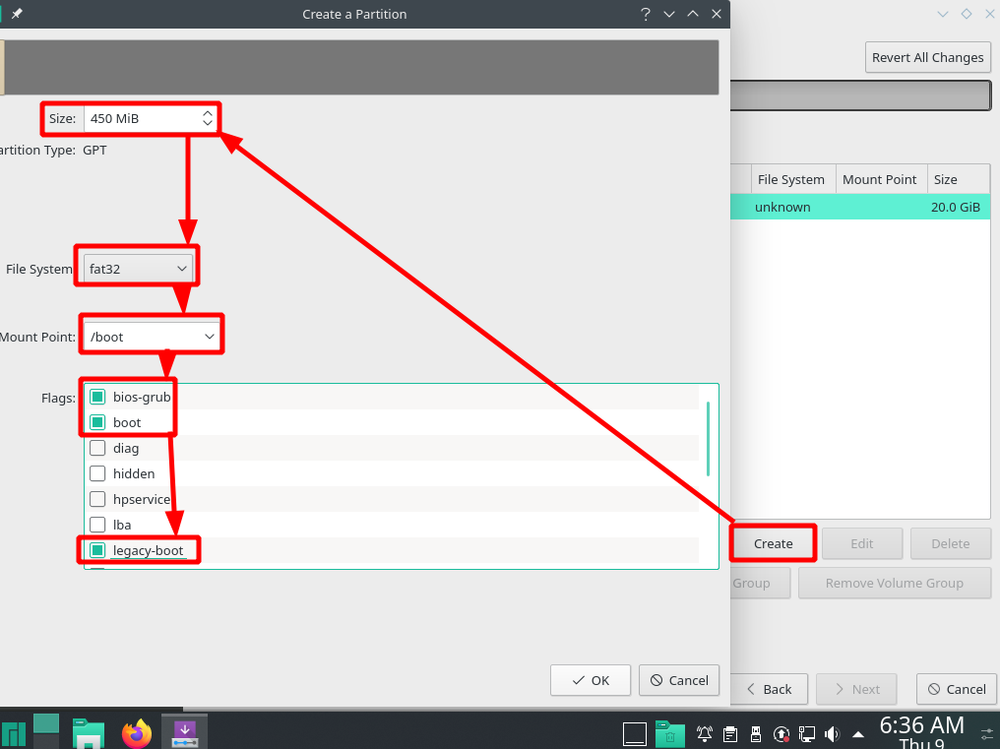

بسم الله الرحمن الرحيم
لتقسيم النظام بشكل يوفر CIA (السرية, السلامة,التوافرية) هناك أكثر من نموذج, من أكثر هذه المناذج مناسبةً لأجهزة سطح المكتب للمستخدم العادي هو تقسيم الهارد إلى 3 أقراص (أو أكثر في حالة إرادة عمل أكثر من قرص للبيانات) وتكون هذه الأقراص كالتالي..
(في حال الرغبة بعمل swap يستحسن إستخدام swap file بدلاً من swap partition.)
أولاً قرص الإقلاع ويستحسن أن يكون غير مشفر كونه لا يحتوي على أي بيانات يمكن استغلالها وﻷن هذا القرص إذا تعرض للتلف يمكننا إصلاحه من الخارج بسهولة أكبر في حالة كان غير مشفر.
ثانياً قرص النظام ويجب تشفيره بكلمة سر آمنة وسيتم مطالبتك بكلمة السر أثناء البوت وهذا قبل الدخول بالنظام وقرص النظام يحتوي على حسابات المستخدمين ويحتوي على البرامج التي تكون في النظام .
ثالثاً قرص البيانات ويجب أن يكون مشفر ولكن لا يجب أن يكون مشفر بنفس كلمة المرور الخاصة بقرص النظام بل يجب تشفيره بعد قرص النظام وعزله عنه.
المصدر هنا
نقوم بدايةً بالوصول لهذه النافذة من الـInstaller كما بالصورة.
ثم نضغط على next فنجد الصورة التالية ونقوم بعمل partition table.
نبدأ الآن بالتقسيم بوضع قرص للـboot بحيث لا يزيد مساحته عن 450 ميجا ولا يقل عن 150 ميجا ويكون نظام الملفات fat32 مع وضع الـflags المناسبة.
وبعد الموافقة عليه نختار قرص جديد ونقوم بوضع القيم التالية..
والقرص الأخير قرص البيانات كالتالي..
وهكذا يكون هناك قرص boot غير مشفر وقرص فيه home و root مشفر وقرص أخير فيه البيانات غير مشفر..
الآن نريد تشفير قرص البيانات ونقوم بذلك إما من نفس الـISO فلا نقوم بإعادة التشغيل ونشفر من خلال KDE Partition أو بعد الإقلاع من نفس القرص.
نقوم بفتح KDE partition وكتابة كلمة السر (تكون manjaro في الـISO) ثم نقوم بحذف القرص الخاص بالبيانات وننشئ قرص جديد بكل الحجم المتاح ونضع كلمة سر ثم نضغط apply كما بالصورة..
وهكذا نكون قد حققنا المطلوب من أن قرص البيانات سيكون له كلمة مرور مختلفة عن قرص النظام وقرص الإقلاع لن يكون له أي كلمة مرور.
للمزيد قم بالرجوع للصفحة الرئيسية
لا تنسونا من صالح دعائكم